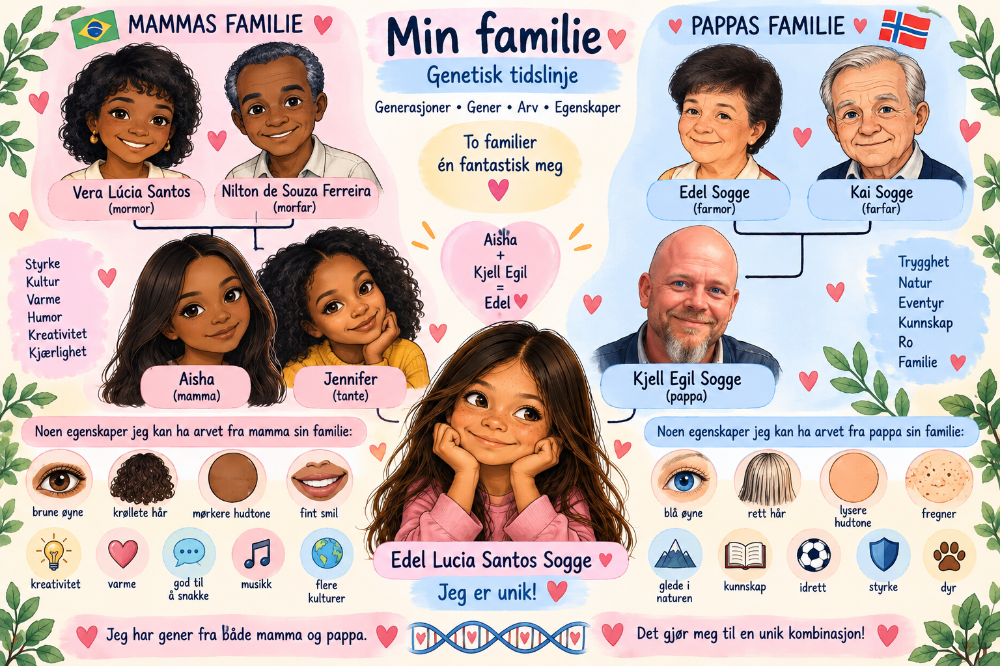
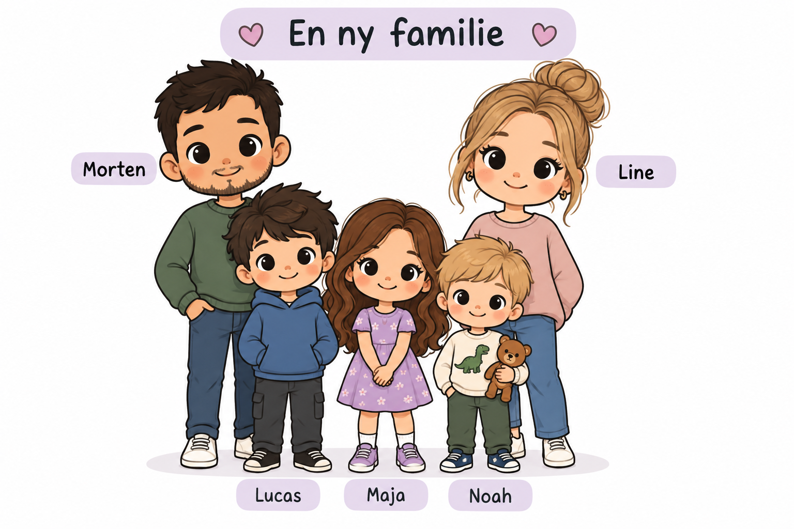

Naturfag · Undersøkelse
Min genetiske tidslinje
To familier, én Edel. Vi ser på generasjoner, gener og egenskaper – og sammenligner å si det høyt med å skrive det ned.
generasjonergener · arvegenskapmuntlig × skriftlig
1 av 9 · Se og forstå

Dette er familien til Edel.
Vera og Nilton er foreldrene til Aisha.
Edel Sogge og Kai er foreldrene til Kjell Egil.
Aisha og Kjell Egil er foreldrene til Edel.
Dette kaller vi generasjoner.
2 av 9 · Muntlig, uten hjelp
🎤 Hvem er foreldrene til Aisha?
🎤 Hvem er foreldrene til Kjell Egil?
3 av 9 · Sekvens
👵👴→👩👨→👧
Hva kommer først? Hva kommer etterpå?
4 av 9 · Gammel kunnskap, nye ord borte
🎤 Edel har egenskaper fra både mamma og pappa. Hvordan kan det skje?
5 av 9 · Egenskap
🎤 Nevn en egenskap Edel kan ha arvet. Hvordan kan du forklare det?
6 av 9 · Det viktige testet
A · Snakke først
🎤 Hvorfor kan Edel ligne både på mamma og pappa?
Si hele svaret høyt først.
7 av 9 · Skriftlig uten forberedelse
B · Skrive direkte
✏️ Hvordan kan Edel ha fått brune øyne? Skriv svaret ditt.
8 av 9 · Generalisering

Et barn har krøllete hår. Moren har krøllete hår.
🎤 Hvordan kan gener være med på å forklare dette?
9 av 9 · Til slutt
🎤 Fortell meg én ting du husker om gener, arv eller egenskaper.